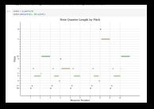
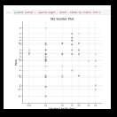
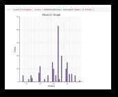

Week 4
Task 1: jSymbolic
My chosen jSymbolic analyses are:
- Number of Pitches - 20
- Number of Pitch Classes - 7
- Range - 50
- Strong Tonal Centres - 2
- Mean Pitch - 72.51
- Mean Pitch Class - 5.396
- Most Common Pitch - 76
- Most Common Pitch Class - 4
- Interval Between Most Prevelant Pitches - 3
- Pitch Variability - 11.26
- Last Pitch - 71
- Most Common Melodic Interval - 7
- Most Common Rhythmic Value - 5
These analyses show a few interesting details about my piece - despite it being a rather repetitive one, the 'range' is actually fairly high - so while the rhythm remains fairly consistent, the pitch is actually moving up and down quite a bit, as evidenced by the high 'pitch variability', as well.
Task 2: music21
The graph thumbnails are outlined in black - you can click on them to see full-size versions in a new tab.
Note Quarter Length by Pitch (Piano Roll) -
This graph demonstrates the range of pitches (vertical axis) present across the first 10 bars of my piece. This shows the repetitive structure of the song - not surprising as this is a piece of background music - with the same rythmic pattern repeated multiple times, yet with the pitch moving up & down across each repetition of the song's central motif, reaching its highest pitch (B6) in bar 8.
Scatter Plot
This displays the same information in a more holistic manner - simply engaging with the note length in isolation rather than within a temporal context. It is also, unlike the piano roll, not limited to the first 10 bars of my piece.
Histogram
The histrogram confirms what can be intuited from the piano roll - that E5 is the most common note within Nostalgic Scenery's opening. However, the notches marking out the x axis do not seem to scan particularly well, there being no markings other tha C3, 4, 5, etc. Marking out E or a similar half-step in the legend may make this graph easier to discern by eye.